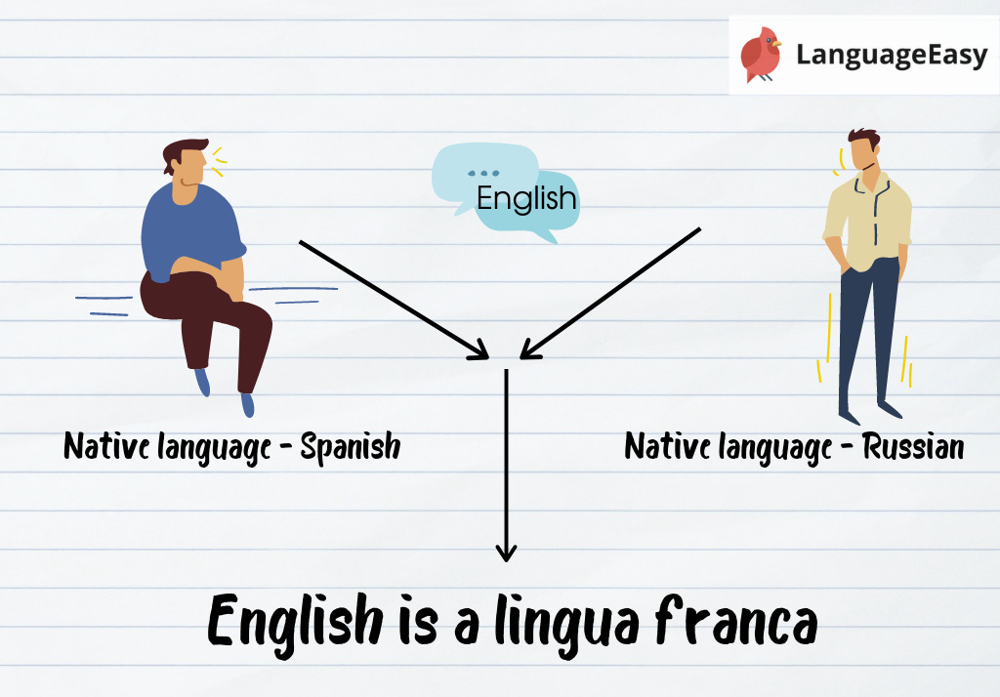
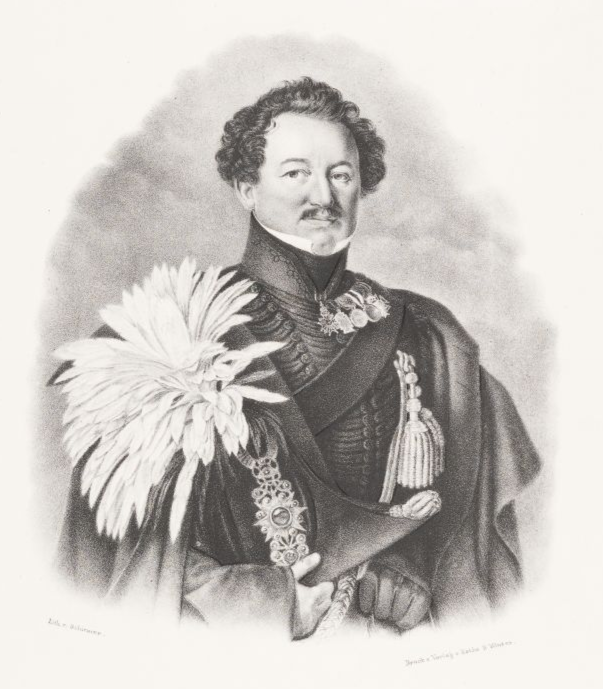
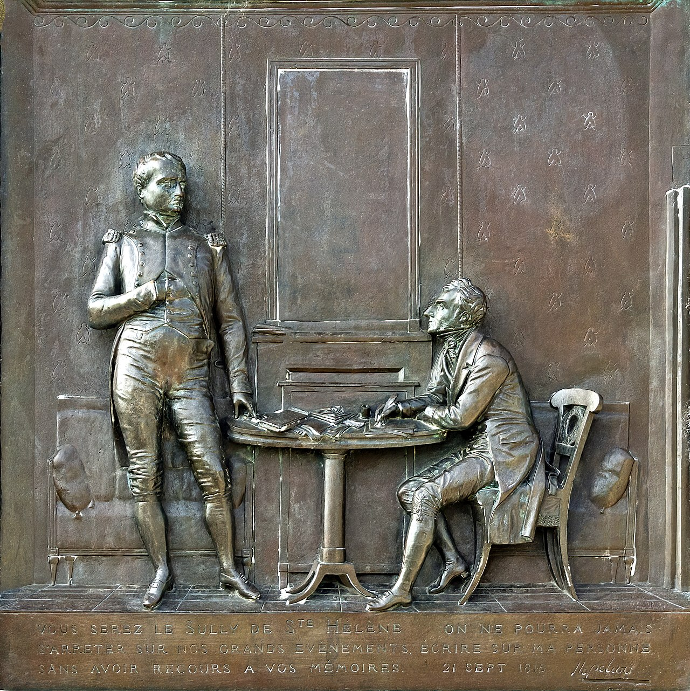
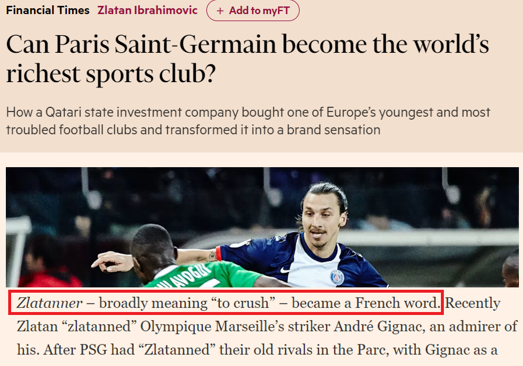

라이프치히 전투 (34) - 나폴레옹이 만든 유행어
게시: 2026-02-09T06:30:49+09:00
원래 유럽 전장에서는 항복이 결코 드문 일이 아니었고 불명예스러운 일도 아니었습니다. 나폴레옹의 쟁쟁한 부하들인 뮈라나 란 등도 한 번씩 적에게 항복하여 포로 신세가 된 적도 있었습니다. 작센군의 경우는 항복이라기보다는 적군에게 전향한 것이었습니다. 그런데 그런 전향도 원래 큰 수치는 아니었습니다. 몇 개월 전에 프랑스측에서 연합군측으로 넘어온 조미니의 경우도 있었고, 당장 프로이센군의 요크 장군만 하더라도 1812년 러시아 원정 말미인 12월 30일 타우로겐(Tauroggen) 조약을 맺고 그랑다르메에서 러시아군으로 전향했습니다.
(타우로겐 조약을 기념하는 비석입니다. 타우로겐(Tauroggen)은 독일식 지명이고, 지금 그곳은 리투아니아 도시입니다. 리투아니아어로는 토라게(Tauragė)라고 읽습니다.) 그런데 1813년 10월 18일 작센군 대부분이 연합군 편으로 단체 전향한 것이 왜 파급을 일으켰을까요? 가장 큰 문제는 한창 전투의 열기가 뜨거운 와중에 전향했다는 점입니다. 조미니의 경우엔 자신에 대한 체포영장이 떨어지자 어쩔 수 없이, 그것도 휴전 기간 중에 홀로 전향했습니다. 요크 장군은 프로이센 사단 전체를 이끌고 러시아군으로 넘어갔지만, 전투 도중에 자신의 상관인 막도날 원수를 배신한 것은 아니었습니다. 막도날이 먼저 후퇴하면서 요크에게도 후퇴 명령을 내렸으나, 이미 러시아군과 교신을 주고 받던 요크는 일부러 철수를 지연시켰고, 그렇게 우물쭈물하다 러시아군에게 일부러 포위된 뒤에 러시아군과 '휴전 협정'을 맺었습니다. 그에 비해 작센군은 한창 총알이 날아다니고 포연이 자욱한 가운데 적을 공격하는 척하면서 적군편으로 넘어갔습니다. 이건 겁장이나 저지르는 "적전도주"와 비슷한 일로서, 겁장이라는 비난은 군인으로서 가장 불명예스러운 것이었습니다. 전투 도중의 전향이 그렇게 불명예라면, 그 불명예를 벗을 가장 간단한 방법이 있습니다. 자신들이 적군에게 넘어가는 이유가 단지 목숨이 아까운 겁장이라서가 아니고, 그것이 자신의 조국과 국왕을 위한 진정한 애국이기 때문이라는 것을 증명하면 됩니다. 그건 바로 전향하자마자 연합군편에서, 조국과 국왕을 겁박하는 독재자 나폴레옹에 대항하여 싸우면 간단히 해결되는 것입니다. 그런데, 그것이 더 큰 문제였습니다. 당시 유럽 세계는 국가란 민족 공동체를 위한 체계가 아니라 왕과 귀족들을 위한 계급 질서로 이루어져 있었습니다. 즉, 프로이센의 장교는 자신의 휘하에 있는 평면 출신 병사들보다는 차라리 적군인 프랑스군 장교와 더 동질감을 느꼈습니다. 실제로 당시 유럽 귀족들의 링구아 프랑카(lingua franca, 통용어)는 프랑스어로서, 러시아군 장교들은 전투 중에도 서로 프랑스어로 대화했고, 그래서 러시아군 장교를 프랑스군으로 오인한 코삭 기병에게 맞아죽는 장교가 생기기도 했습니다. 그런 세계에서 장교들이 충성해야 하는 대상은 국익이 아니라 국왕의 명령, 그리고 동료 장교들에 대한 신뢰였습니다. 또 반대로, 아무리 국왕이라고 해도 전투 도중에 우방을 배신하고 적군편에 붙으라고 자국군에게 명령하는 것은 왕으로서의 권위를 크게 실추시킬 뿐만 아니라, 국왕이기 이전에 한 명의 신사로서 지켜야 할 기본적인 명예를 저버리는 파렴치한 일이었습니다.

(링구아 프랑카란 무역이든 학계이든 스포츠계이든 그 세계에서 일종의 공용어로 통용되는 언어입니다. 가령 현대의 AI 업계에서는 python이 링구아 프랑카입니다. 물론 관광업을 비롯한 대부분 업계에서 링구아 프랑카는 영어입니다.) 그런 분위기 속에서 작센군이 지휘관의 인솔하에 단체로 연합군에 넘어갔다는 것은 적어도 겉으로는 점잔 빼는 유럽 장교들 사이에서는, 피해자인 그랑다르메 측에서는 물론이고 이득을 본 연합군 측에서도 충격적인 사건이었습니다. 작센군의 행동이 작센 국왕의 명령에 따라 사전에 조율된 것이었다면, 비록 작센 국왕 개인은 욕을 먹을지라도, 냉엄한 국제 정치에서 어느 정도 수긍은 할 수 있었을 것입니다. 그러나 작센군의 집단 이탈은 작센 국왕과는 전혀 협의되지 않은 행동이었습니다. 물론 그렇게 충격적이라고 해서 연합군 장교들이 작센군의 전향을 면전에서 배척하거나 비난하지는 않았습니다. 당장 자신들에게 유리하게 되었는데 싫어할 리는 없었지요. 특히 베르나도트 휘하의 북부 방면군에서는 작센 뿐만 아니라 뷔르템베르크나 바덴 등 라인연방 소속군의 전향을 은근히 기대하고 있었습니다. 이들은 지속적으로 독일 민족주의를 내세우며 나폴레옹과 프랑스의 압제에서 벗어나 독일인의 자긍심을 되찾자는 팜플렛을 제작 배포하며 라인연방 소속 독일군들의 이탈을 조장했기 때문이었습니다. 그러나 정작 이렇게 전투 도중에 전향이 일어나자 러시아 및 프로이센 장교들도 이들의 전향에 꽤 당황했다고 합니다. 이렇게 연합군측으로 넘어간 것은 파운스도르프에서 스트로가노프의 러시아군에게 항복한 작센 사단 뿐만이 아니었습니다. 랑쥬롱의 러시아 군단이 파르터강을 도하할 때, 그 강변 인근에 배치되어 있던 작센 대대 하나가 전향해왔고, 마르몽 휘하에 있던 작센 기병대 2개 연대 수백 명도 러시아군 기병대에게 돌격하는 척하다가 러시아군 앞에서 칼을 칼집에 꽂은 뒤 '만세(hurrah)'를 외쳐 전향을 표시했습니다. 또 역시 마르몽 휘하에 있던 노르만(Normann) 장군의 뷔르템베르크 기병대 약 600명도 기회를 노리다 러시아군에게 항복했습니다.

(뷔르템베르크 기병여단의 노르만(Karl Friedrich von Normann) 장군입니다. 그의 전향은 국왕 프리드리히 1세와 아무 협의를 거치지 않은 단독 행동이었고, 그래서 그는 본국에서도 큰 비난을 받았습니다. 그는 나폴레옹 몰락 이후에도 뷔르템베르크로의 귀국이 허용되지 않았고, 국왕 프리드리히 1세가 1817년 사망한 후에야 귀국할 수 있었는데, 그러고도 여전히 뷔르템베르크의 수도인 슈투트가르트로 들어오는 것은 금지되었습니다. 그는 시인 바이런처럼 개인 자격으로 그리스 독립전쟁에 참전했다가 불과 몇 달만인 1822년 7월 페타(Peta) 전투에서 패배와 함께 부상을 입었고, 그로 인해 곧 사망했습니다.) 가장 난처했던 일은 이렇게 전향한 작센군 중 일부가 '당장 프랑스군과 싸우겠다'며 전선 투입을 요청했다는 것이었습니다. 모두가 그런 것은 아니었고, 파르터 강변에서 전향한 작센 대대가 그런 열정(?)을 보이며 싸우겠다고 했습니다. 그러나 이건 랑쥬롱으로서도 도저히 들어줄 수가 없는 불명예스러운 일이었습니다. 방금 전까지 신뢰 관계를 맺고 함께 싸우던 전우들에게 곧장 총부리를 돌린다? 당시 유럽 장교들 사이에선 참을 수 없는 추잡한 일이었습니다. 위에서 언급한 대로, 1812년 말 요크의 프로이센 사단이 막도날을 배신하고 러시아군에게 넘어간 타우로겐 조약에서도, 요크는 어디까지나 '러시아군과의 단독 휴전'을 맺었을 뿐 프랑스군에 대한 적대행위에는 동의하지 않았고, 러시아군도 그걸 강요하지 않았습니다. 그럼에도 불구하고 요크의 군인으로서의 명예를 믿었던 막도날은 깊은 배신감을 느꼈습니다. 그런데 아무리 작센군이 프랑스군과 싸우겠다고 자발적으로 나선다고 해도, 랑쥬롱은 그걸 허락하기는 곤란했습니다. 당시 랑쥬롱은 전에 언급한 베르나도트의 고집 때문에 형식적으로는 베르나도트의 지휘하에 있었으나 실제로는 블뤼허가 여전히 미주알고주알 참견하여 두 명의 상관을 모시는 난처한 처지였습니다. 그는 이 문제를 블뤼허에게 보고했는데, 블뤼허도 그들의 참전을 허락하지 않고 후방으로 물러나도록 했습니다. 별도로 전향한 뷔르템베르크 기병대의 노르만 장군도 명예의 문제 때문에 프랑스군에 대한 공격에는 참여하지 않는다는 조건으로 전향했고, 러시아군도 그걸 존중해주었습니다. 가장 큰 규모였던 파운스도르프에서의 작센 사단의 전향에서도, 작센 여단장 뤼셀(Gustav Xaver Reinhold von Ryssel) 장군은 자신들은 프랑스군에 대한 공격에는 참여하지 않겠다는 뜻을 명확히 했습니다. 그러니까 작센군의 전향은 최소한의 명예는 지키는 와중에 이루어진 셈이었습니다. 그러나 나중에 세인트 헬레나에서 나폴레옹의 구술을 라스 카즈(Las Cases)가 받아적은 나폴레옹의 회고록(Le Mémorial de Sainte-Hélène)에서, 나폴레옹은 작센군의 배신 행위는 프랑스군에 대한 공격으로 이어져 최소한의 명예조차 지키지 않았다고 맹비난을 퍼부었습니다.

(라스 카즈의 고향인 라보르(Lavaur)에 있는 라스 카즈 기념비에 있는 청동 부조입니다. 세인트 헬레나에서 나폴레옹의 구술을 받아적는 라스 카즈의 모습을 묘사하고 있습니다. 프랑스어에서는 보통 Las Cases를 라 카즈라고 읽습니다만, 예외적으로 라스 카즈는 라스 카즈라고 읽습니다. 이유는 라스 카즈가 원래 프랑스 가문이 아니라 스페인에서 유래된 성씨이기 때문에 원래의 발음을 존중해서 그렇게 읽는다고 합니다.) "나는 우리 동맹국 군주들 개인에게는 단 한 순간도 불평할 이유가 없었네. 선량한 작센 국왕은 마지막까지 신의를 지켰고, 바이에른 국왕은 더 이상 상황을 어찌할 수 없음을 내게 솔직히 고백했지. 뷔르템베르크 국왕의 관대함은 특히나 인상적이었고, 바덴 대공은 정말 마지막 순간에 무력에 밀려 굴복했을 뿐이야. 이들은 모두 다가올 폭풍에 대해 내게 미리 경고를 해주었으니, 마땅히 그 점을 인정해 줘야겠지. 하지만 반대로 그 밑의 실무자들이 보여준 행태는 정말 혐오스러웠어! 우리 전선으로 돌아와 우리를 공격했던 작센놈들의 그 치욕스러운 행위는 전쟁사에서 결코 지워지지 않을 걸세. 그들의 배신은 병사들 사이에서 속담이 될 정도였지. 지금도 우리 군에서는 동료를 살해하는 짓을 '삭소네(Saxonner)'라는 동사로 부르지 않나. 무엇보다 이 모든 비극의 정점은 바로 그자였네. 프랑스인의 피로 왕관을 얻고, 프랑스가 공들여 키워낸 자가 우리에게 최후의 일격을 가하다니. 세상에 이럴 수가 있는가."

(프랑스에서는 정말 유명한 사람 이름에 ~er를 붙여서 동사화하는 경향이 있습니다. 다만 동료 살해라는 뜻의 saxonner라는 신조어는 나폴레옹의 염원과는 달리 결국 프랑스어로 자리를 잡지 못했습니다. 그러나 라구사 공작 마르몽의 배신을 기억하자고 만든 raguser(배신하다)라는 신조어는 정말로 현대 프랑스어 사전에도 실려 있습니다. 그렇게 사람 이름이 동사화되는 가장 최근 사례는 바로 파리 생제르멩에서 뛴 전설의 스웨덴 축구선수 즐라탄 이브라모비치의 이름을 딴 zlatanner (쳐부수다, 지배하다)입니다. 아직 정식으로 프랑스어 사전에는 실리지 못했으나, 프랑스에서 '즐라타네'라고 말하면 다 알아듣는다고 합니다. 2014년 3월 28일자 Financial Times에 실린 기사입니다.) 왜 나폴레옹은 작센인들이 저지르지도 않은 일에 대해 비난한 것일까요? 덕분에 흔히 그들이 소속되었던 제7군단장인 레이니에가 라이프치히 전투에서 부상을 입고 포로가 된 것이 작센인들이 불의의 공격을 가해왔기 때문이라는 잘못된 정보가 나돌기도 했습니다. 이는 뭔가 잘못된 일에 대해서는 언제나 남탓을 하던 나폴레옹의 못된 버릇 때문이기도 했습니다만, 실제로 일부 작센 포병대가 전투에 참전했기 때문이기도 했습니다. 위에서 언급한 대로, 파운스도르프에서 전향한 작센 여단장 뤼셀은 전투에 참전하지 않겠다는 뜻을 분명히 했지만, 그와 함께 넘어온 작센 포병대 중 일부를 러시아군이 강제 차출하여 전투에 투입했던 것입니다. 게다가 (비록 뤼셀의 작센 사단은 아니었지만) 일부 다른 작센군이 '프랑스군과 싸우겠다'고 자원했던 사실과 섞여서, 작센군이 전향하자마자 프랑스군에게 총구를 돌렸다는 소문이 쫙 돌았던 것입니다. 당일 오후, 파운스도르프에서 작센군이 연합군 측으로 넘어갔다는 소식을 들은 나폴레옹은 그 소문이 퍼지지 않도록 하라고 부하들에게 엄명을 내렸습니다. 그 소문이 퍼지면 이제 끝장이라는 절망감이 병사들을 사로잡을까봐 걱정했기 때문이었습니다. 그러나 전쟁터에서는 없던 소문도 만들어서 순식간에 퍼지는 법입니다. 작센군의 단체 전향 소식은 곧 전체 전선에 다 퍼졌습니다. 그러나 정작 그 소문을 들은 프랑스군은 사기가 떨어지기는 커녕 '그런 뻔뻔스러운 배신 행위'에 분노하여 더욱 가열차게 싸웠다고 합니다. 작센군의 전향으로 인해 전황이 크게 바뀌었을까요? 꼭 그렇지는 않았습니다. 그 이야기는 다음 주에 보시겠습니다. Source : The Life of Napoleon Bonaparte, by William Milligan Sloane Napoleon and the Struggle for Germany, by Leggiere, Michael V With Napoleon's Guns by Colonel Jean-Nicolas-Auguste Noël https://www.britannica.com/event/Napoleonic-Wars/Dispositions-for-the-autumn-campaign http://www.historyofwar.org/articles/campaign_leipzig.html https://warhistory.org/@msw/article/leipzig-battle-of-the-nations https://www.encyclopedia.com/history/encyclopedias-almanacs-transcripts-and-maps/leipzig-battle-0 https://warfarehistorynetwork.com/article/death-knell-for-napoleons-empire/ https://www.napoleon-series.org/military-info/battles/leipzig/c_leipzigoob10.html https://fr.wikipedia.org/wiki/Le_M%C3%A9morial_de_Sainte-H%C3%A9l%C3%A8ne https://www.gutenberg.org/cache/epub/53969/pg53969.txt https://commons.wikimedia.org/wiki/File:Convention_of_Tauroggen_-_Overall_view.JPG https://www.ft.com/content/ae88a0b2-b53a-11e3-af92-00144feabdc0 https://impereur.blogspot.com/2017/05/karl-friedrich-leberecht-von-normann.html
{kind=link}